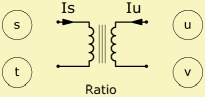

Coupler
| Home | LE-Part | Electric |
 |
 Serial |
 Parallel |
 |
 |
Parameters
| Caption | String | Name of component |
| Formula | String | Formula of parameters |
| Mode | [General, Diaphragm, Run-time Formula] | |
| Ratio | Ratio = Vuv/Vst = -Is/Iu | |
| Diaph | Ref or size | Diaphragm size |
The Coupler is a special component, which implements an ideal transformer into the network. For example ideal transformers can be used for modeling the coupling between the mechanical-impedance-domain and the acoustical domain by means of a diaphragm.
Mode
Mode selects the input mode of the single parameter Ratio.
General : you would specify a value for Ratio.
Diaphragm : a form is available
where you can specify a reference to a vibrating boundary of the BEM-Part
or a value for the diaphragm size. Internally the effective radiating area SD is calculated.
The sound pressure is p = F/SD and the volume velocity is q = v·SD.
Combined this yields the mechano-acoustic transduction of impedance: Za = Zm/SD2.
Run-time Formula : See below at chapter Formula.
Notes on Wiring
The Coupler has no inductivity and there is no loss. Further there is no mutual-inductance as in the Transformer-model. Because of the latter you can not connect Couplers in any arbitrary way in AKABAK. There are some restrictions in connecting multiple Coupler-elements directly. There are no restrictions with other elements.
- The poles of the primary side of different Couplers can be connected, in series or in parallel, respectively.
- One of the secondary poles has to be grounded.
- A secondary pole must not be directly connected with any other pole of a Coupler and should not be connected with the Source of the network.
Formula
Run-time Formula
If Mode = Run-time Formula Ratio is specified in form of a run-time formula. The formula can be entered at parameter Formula. Note, that in this case the result of the last formula gets assigned to parameter Ratio.
Run-time variables are :
| f | Frequency |
| w | ω = 2π·f |
Constant Formula
If Mode = General or Mode = Diaphragm the name of the parameters are equal to the formula-identifiers:
|
|||||||
Example
The example is available at AKABAK Examples/LEM/Coupler2.akp
This project contains two independent networks. Couplers are wired as shown to the right. As noted one terminal should always be grounded. If you need to concatenate Couplers then a small Resistor can help because the secondary terminal of a Coupler can be wired to any component but another Coupler.
This example also demonstrates the use of run-time formula.